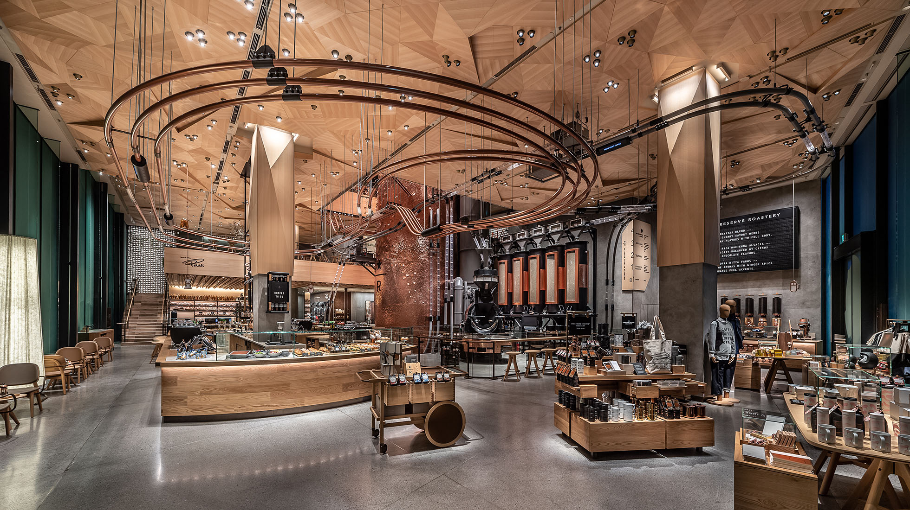
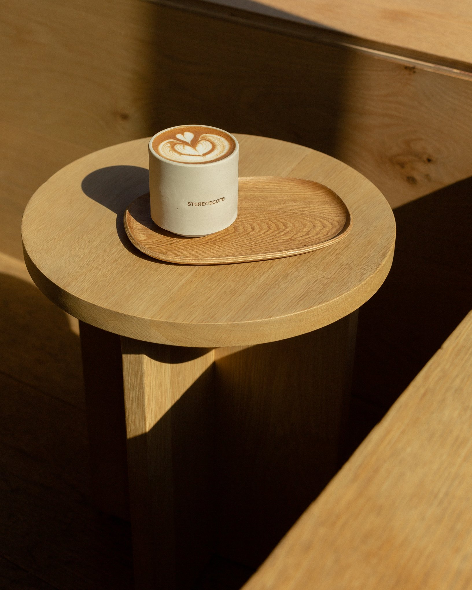
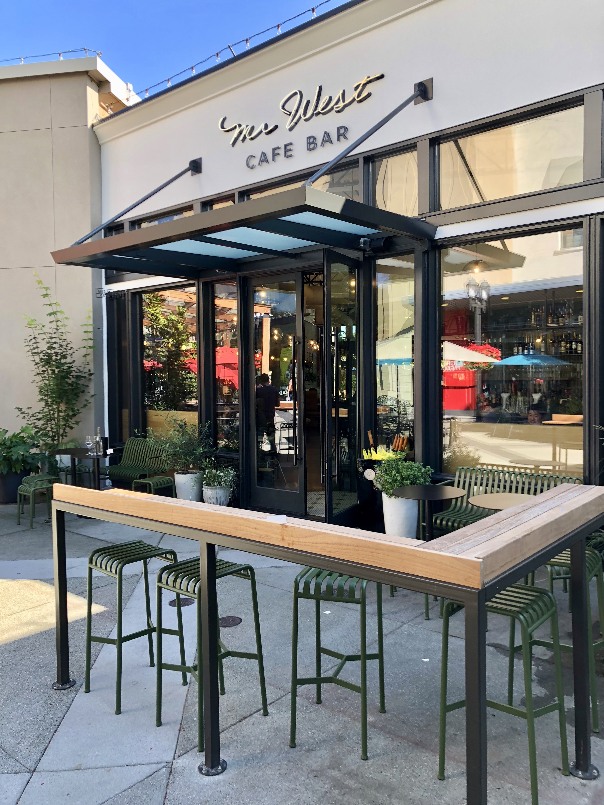

Starbucks Reserve - Seattle
Seattle is where the first Starbucks is located. This is a well-known tourist attraction with lines always wrapped outside the little shop by Pike Place Market. When my family came to visit me in Seattle during my summer internship, we snapped a picture in front of the iconic location and moved on to the next spot. My friends who were local to Seattle recommended for me to go to the Starbucks Reserve instead because of its spacious interior, beautiful layout, and plentiful options from drinks to pastries to souvenirs.
Immediately from opening the doors to the Starbucks Reserve, the smells of delicious drinks and food hit me while the noise of busy tourists and enthusiastic locals filled my ears. I usually go to cafes to work and study, but this time, it was to explore and experience a tourist attraction. The Reserve has specialty drinks and even a pastry section. I ordered one of their specialities—an iced hazelnut latte—and tried their almond croissant and fresh strawberry tart. Although the prices were more expensive than their usual locations, I convinced myself to give it a try for the special occasion. The drink came in a special Starbucks Reserve cup which I kept as a little souvenir, while the pastries had a wonderful sweetness. Beyond what I put into my mouth, my eyes had a treat with the architecture and open layout. The coffee was being made right in front of our eyes. This Starbucks Reserve was a lovely experience, and I would highly recommend it for those who would like to get a connection to Starbucks in Seattle without waiting hours in line at the first Starbucks location.
Stereoscope Coffee - Los Angeles
I found Stereoscope Coffee on my social media pages. My friends had posted about their visits to the local coffee shop, and its minimalistic design caught my attention and convinced me to physically pay a visit. Stereoscope Coffee has a few locations in Los Angeles, and I decided to stop by the cafe by Echo Park. Located on the corner of a busy street filled with little shops, Stereoscope Coffee served a peaceful, calming presence.
To date, I've gone to Stereoscope Coffee twice—once during the start of a school year and another during exam season. I would not recommend the latter since the cafe was packed with students cramming assignments and studying notes even early in the morning. The seating is made for individual working as well as holding coffee chats. There are outlets available, and the coffee and small selection of pastries are just steps away. However, I would like to point out that the actually chairs may not be the most comfortable. You simply don't have a place to rest your back, nothing to lean against during your work session. I guess it does help with bringing awareness to your posture. Besides the interior design, Stereoscope Coffee's drinks stand out to me. The cafe has coffees and teas to choose from, and drinks can be personalized to suit your taste. I personally really enjoyed their iced lychee peachy black tea; the sweetness is perfect, and the taste is refreshing. I haven't had the chance to try their pastries because everytime I've gone, every pastries had been sold. This shows their popularity and probably delicious tastes as well! And if you're someone who enjoy aesthetics, Stereoscope Coffee is the place for you. Every corner you turn and every picture you snap will be one worthy of your next Instagram content and worthy of your visit into the space.
Mr. West Cafe - Seattle
Since the start of my stay in Seattle this past summer, my new friends have recommended Mr. West in the University Village when they heard my hobby of visiting cafes and working at cafes. It's surprising that I've passed by Mr. West several times during my nearly two-month stay in Seattle, but only step foot inside hours before my flight took off back home to Oakland. This was my way of a perfect wrap to the trip.
Mr. West is located in a busy outdoor mall, so I was surprised by the atmosphere it maintains inside and outside. My friend took me there in the morning to get work done, and we stayed until the afternoon. We sat outside, right by the entrance, since the weather was warm and not too hot yet. Our spots allowed me to see both the inside and outside interactions of guests. There was even a little shop inside, mainly filled with plants and Mr. West merchandise and local businesses' products. Visually, the space was beautiful. My visit to Mr. West was originally to do last-minute work before wrapping up my stay in Seattle, but ultimately, conversations took control, and we just chatted the brunchtime away. We filled our table with goodies, ordering an iced Seattle fog, an iced vanilla latte (can you tell my enjoyment of lattes yet?), a seasonal fruit toast, and a signature Mr. West breakfast plate. Everything looked fantastic, and their taste matched their visuals. The fruit toast was probably the only thing that did not meet our expectations, but I do take responsibility that we may have ordered the wrong thing compared to what we saw was recommended on Yelp.
When I visit Seattle again, Mr. West is definitely on my list of cafes to re-visit. And that time around, I'll actually use my time there to do work, or I wouldn't be too mad if my friends and I chatted away again. Mr. West will then officially be a spot of even greater memories.